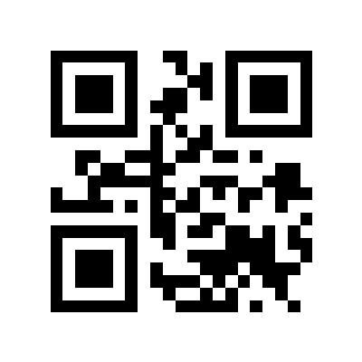
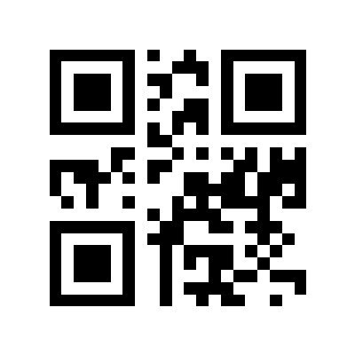
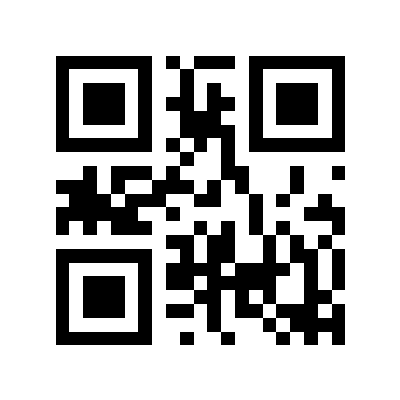
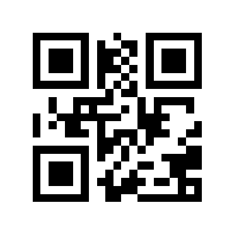
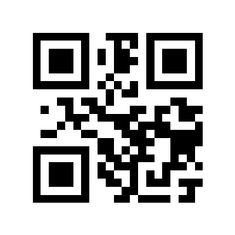
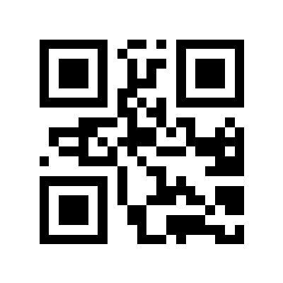
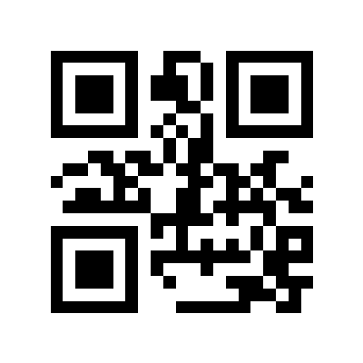

<!doctype html><meta charset="utf-8"><title>Test QR Codes</title>
<style>body{font-family:sans-serif;background:#fff;display:flex;flex-wrap:wrap;gap:24px;padding:24px}figure{margin:0;text-align:center}</style>
<figure><figcaption><b>1077-2</b><br>Alex Morgan<br>Washing</figcaption></figure>
<figure><figcaption><b>1042-1</b><br>Priya Sharma<br>Ironing/Folding</figcaption></figure>
<figure><figcaption><b>1088-1</b><br>Rahul Verma<br>Ready for Collection</figcaption></figure>
<figure><figcaption><b>1098-1</b><br>Karan Patel<br>Drying</figcaption></figure>
<figure><figcaption><b>1051-1</b><br>Tanvi Deshmukh<br>Submitted</figcaption></figure>
<figure><figcaption><b>1077-1</b><br>Alex Morgan<br>Collected</figcaption></figure>
<figure><figcaption><b>HL-1077-2</b><br>Prefixed form</figcaption></figure>
